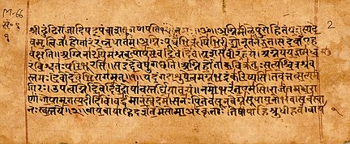
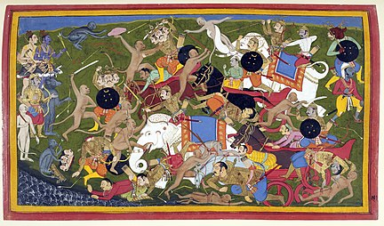
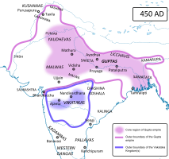
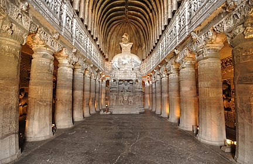
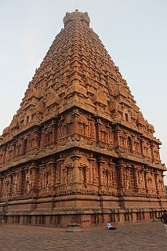
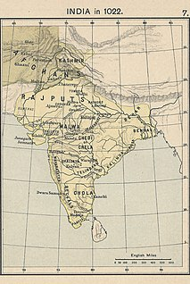
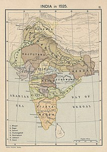
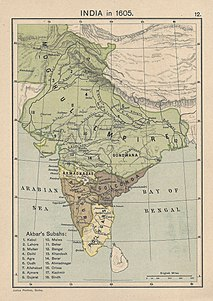
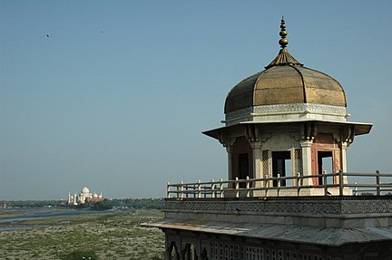

India
India, officially the Republic of India (Hindi: Bhārat Gaṇarājya),[23] is a country in South Asia. It is the seventh-largest country by area, the second-most populous country, and the most populous democracy in the world. Bounded by the Indian Ocean on the south, the Arabian Sea on the southwest, and the Bay of Bengal on the southeast, it shares land borders with Pakistan to the west;[f] China, Nepal, and Bhutan to the north; and Bangladesh and Myanmar to the east. In the Indian Ocean, India is in the vicinity of Sri Lanka and the Maldives; its Andaman and Nicobar Islands share a maritime border with Thailand, Myanmar and Indonesia.
Modern humans arrived on the Indian subcontinent from Africa no later than 55,000 years ago.[24][25][26] Their long occupation, initially in varying forms of isolation as hunter-gatherers, has made the region highly diverse, second only to Africa in human genetic diversity.[27] Settled life emerged on the subcontinent in the western margins of the Indus river basin 9,000 years ago, evolving gradually into the Indus Valley Civilisation of the third millennium BCE.[28] By 1200 BCE, an archaic form of Sanskrit, an Indo-European language, had diffused into India from the northwest,[29][30] unfolding as the language of the Rigveda, and recording the dawning of Hinduism in India.[31] The Dravidian languages of India were supplanted in the northern and western regions.[32] By 400 BCE, stratification and exclusion by caste had emerged within Hinduism,[33] and Buddhism and Jainism had arisen, proclaiming social orders unlinked to heredity.[34] Early political consolidations gave rise to the loose-knit Maurya and Gupta Empires based in the Ganges Basin.[35] Their collective era was suffused with wide-ranging creativity,[36] but also marked by the declining status of women,[37] and the incorporation of untouchability into an organised system of belief.[g][38] In South India, the Middle kingdoms exported Dravidian-languages scripts and religious cultures to the kingdoms of Southeast Asia
In the early medieval era, Christianity, Islam, Judaism, and Zoroastrianism put down roots on India's southern and western coasts.[40] Muslim armies from Central Asia intermittently overran India's northern plains,[41] eventually establishing the Delhi Sultanate, and drawing northern India into the cosmopolitan networks of medieval Islam.[42] In the 15th century, the Vijayanagara Empire created a long-lasting composite Hindu culture in south India.[43] In the Punjab, Sikhism emerged, rejecting institutionalised religion.[44] The Mughal Empire, in 1526, ushered in two centuries of relative peace,[45] leaving a legacy of luminous architecture.[h][46] Gradually expanding rule of the British East India Company followed, turning India into a colonial economy, but also consolidating its sovereignty.[47] British Crown rule began in 1858. The rights promised to Indians were granted slowly,[48][49] but technological changes were introduced, and ideas of education, modernity and the public life took root.[50] A pioneering and influential nationalist movement emerged, which was noted for nonviolent resistance and became the major factor in ending British rule.[51] In 1947 the British Indian Empire was partitioned into two independent dominions, a Hindu-majority Dominion of India and a Muslim-majority Dominion of Pakistan, amid large-scale loss of life and an unprecedented migration
India has been a federal republic since 1950, governed in a democratic parliamentary system. It is a pluralistic, multilingual and multi-ethnic society. India's population grew from 361 million in 1951 to 1.211 billion in 2011.[53] During the same time, its nominal per capita income increased from US$64 annually to US$1,498, and its literacy rate from 16.6% to 74%. From being a comparatively destitute country in 1951,[54] India has become a fast-growing major economy and a hub for information technology services, with an expanding middle class.[55] It has a space programme which includes several planned or completed extraterrestrial missions. Indian movies, music, and spiritual teachings play an increasing role in global culture.[56] India has substantially reduced its rate of poverty, though at the cost of increasing economic inequality.[57] India is a nuclear-weapon state, which ranks high in military expenditure. It has disputes over Kashmir with its neighbours, Pakistan and China, unresolved since the mid-20th century.[58] Among the socio-economic challenges India faces are gender inequality, child malnutrition,[59] and rising levels of air pollution.[60] India's land is megadiverse, with four biodiversity hotspots.[61] Its forest cover comprises 21.7% of its area.[62] India's wildlife, which has traditionally been viewed with tolerance in India's culture,[63] is supported among these forests, and elsewhere, in protected habitats.
Contents
Etymology
According to the Oxford English Dictionary (third edition 2009), the name "India" is derived from the Classical Latin India, a reference to South Asia and an uncertain region to its east; and in turn derived successively from: Hellenistic Greek India ( Ἰνδία); ancient Greek Indos ( Ἰνδός); Old Persian Hindush, an eastern province of the Achaemenid empire; and ultimately its cognate, the Sanskrit Sindhu, or "river," specifically the Indus River and, by implication, its well-settled southern basin.[64][65] The ancient Greeks referred to the Indians as Indoi (Ἰνδοί), which translates as "The people of the Indus".[66]
The term Bharat (Bhārat; pronounced [ˈbʱaːɾət] (audio speaker iconlisten)), mentioned in both Indian epic poetry and the Constitution of India,[67][68] is used in its variations by many Indian languages. A modern rendering of the historical name Bharatavarsha, which applied originally to northern India,[69][70] Bharat gained increased currency from the mid-19th century as a native name for India.[67][71]
Hindustan ([ɦɪndʊˈstaːn] (audio speaker iconlisten)) is a Middle Persian name for India, introduced during the Mughal Empire and used widely since. Its meaning has varied, referring to a region encompassing present-day northern India and Pakistan or to India in its near entirety
History
Ancient India

By 55,000 years ago, the first modern humans, or Homo sapiens, had arrived on the Indian subcontinent from Africa, where they had earlier evolved.[24][25][26] The earliest known modern human remains in South Asia date to about 30,000 years ago.[24] After 6500 BCE, evidence for domestication of food crops and animals, construction of permanent structures, and storage of agricultural surplus appeared in Mehrgarh and other sites in what is now Balochistan, Pakistan.[74] These gradually developed into the Indus Valley Civilisation,[75][74] the first urban culture in South Asia,[76] which flourished during 2500–1900 BCE in what is now Pakistan and western India.[77] Centred around cities such as Mohenjo-daro, Harappa, Dholavira, and Kalibangan, and relying on varied forms of subsistence, the civilisation engaged robustly in crafts production and wide-ranging trade.

During the period 2000–500 BCE, many regions of the subcontinent transitioned from the Chalcolithic cultures to the Iron Age ones.[78] The Vedas, the oldest scriptures associated with Hinduism,[79] were composed during this period,[80] and historians have analysed these to posit a Vedic culture in the Punjab region and the upper Gangetic Plain.[78] Most historians also consider this period to have encompassed several waves of Indo-Aryan migration into the subcontinent from the north-west.[79] The caste system, which created a hierarchy of priests, warriors, and free peasants, but which excluded indigenous peoples by labelling their occupations impure, arose during this period.[81] On the Deccan Plateau, archaeological evidence from this period suggests the existence of a chiefdom stage of political organisation.[78] In South India, a progression to sedentary life is indicated by the large number of megalithic monuments dating from this period,[82] as well as by nearby traces of agriculture, irrigation tanks, and craft traditions

In the late Vedic period, around the 6th century BCE, the small states and chiefdoms of the Ganges Plain and the north-western regions had consolidated into 16 major oligarchies and monarchies that were known as the mahajanapadas.[89][90] The emerging urbanisation gave rise to non-Vedic religious movements, two of which became independent religions. Jainism came into prominence during the life of its exemplar, Mahavira.[91] Buddhism, based on the teachings of Gautama Buddha, attracted followers from all social classes excepting the middle class; chronicling the life of the Buddha was central to the beginnings of recorded history in India.[92][93][94] In an age of increasing urban wealth, both religions held up renunciation as an ideal,[95] and both established long-lasting monastic traditions. Politically, by the 3rd century BCE, the kingdom of Magadha had annexed or reduced other states to emerge as the Mauryan Empire.[96] The empire was once thought to have controlled most of the subcontinent except the far south, but its core regions are now thought to have been separated by large autonomous areas.[97][98] The Mauryan kings are known as much for their empire-building and determined management of public life as for Ashoka's renunciation of militarism and far-flung advocacy of the Buddhist dhamma.

The Sangam literature of the Tamil language reveals that, between 200 BCE and 200 CE, the southern peninsula was ruled by the Cheras, the Cholas, and the Pandyas, dynasties that traded extensively with the Roman Empire and with West and South-East Asia.[101][102] In North India, Hinduism asserted patriarchal control within the family, leading to increased subordination of women.[103][96] By the 4th and 5th centuries, the Gupta Empire had created a complex system of administration and taxation in the greater Ganges Plain; this system became a model for later Indian kingdoms.[104][105] Under the Guptas, a renewed Hinduism based on devotion, rather than the management of ritual, began to assert itself.[106] This renewal was reflected in a flowering of sculpture and architecture, which found patrons among an urban elite.[105] Classical Sanskrit literature flowered as well, and Indian science, astronomy, medicine, and mathematics made significant advances.[
Medieval India


The Indian early medieval age, from 600 to 1200 CE, is defined by regional kingdoms and cultural diversity.[107] When Harsha of Kannauj, who ruled much of the Indo-Gangetic Plain from 606 to 647 CE, attempted to expand southwards, he was defeated by the Chalukya ruler of the Deccan.[108] When his successor attempted to expand eastwards, he was defeated by the Pala king of Bengal.[108] When the Chalukyas attempted to expand southwards, they were defeated by the Pallavas from farther south, who in turn were opposed by the Pandyas and the Cholas from still farther south.[108] No ruler of this period was able to create an empire and consistently control lands much beyond their core region.[107] During this time, pastoral peoples, whose land had been cleared to make way for the growing agricultural economy, were accommodated within caste society, as were new non-traditional ruling classes.[109] The caste system consequently began to show regional differences
In the 6th and 7th centuries, the first devotional hymns were created in the Tamil language.[110] They were imitated all over India and led to both the resurgence of Hinduism and the development of all modern languages of the subcontinent.[110] Indian royalty, big and small, and the temples they patronised drew citizens in great numbers to the capital cities, which became economic hubs as well.[111] Temple towns of various sizes began to appear everywhere as India underwent another urbanisation.[111] By the 8th and 9th centuries, the effects were felt in South-East Asia, as South Indian culture and political systems were exported to lands that became part of modern-day Myanmar, Thailand, Laos, Cambodia, Vietnam, Philippines, Malaysia, and Java.[112] Indian merchants, scholars, and sometimes armies were involved in this transmission; South-East Asians took the initiative as well, with many sojourning in Indian seminaries and translating Buddhist and Hindu texts into their languages
After the 10th century, Muslim Central Asian nomadic clans, using swift-horse cavalry and raising vast armies united by ethnicity and religion, repeatedly overran South Asia's north-western plains, leading eventually to the establishment of the Islamic Delhi Sultanate in 1206.[113] The sultanate was to control much of North India and to make many forays into South India. Although at first disruptive for the Indian elites, the sultanate largely left its vast non-Muslim subject population to its own laws and customs.[114][115] By repeatedly repulsing Mongol raiders in the 13th century, the sultanate saved India from the devastation visited on West and Central Asia, setting the scene for centuries of migration of fleeing soldiers, learned men, mystics, traders, artists, and artisans from that region into the subcontinent, thereby creating a syncretic Indo-Islamic culture in the north.[116][117] The sultanate's raiding and weakening of the regional kingdoms of South India paved the way for the indigenous Vijayanagara Empire.[118] Embracing a strong Shaivite tradition and building upon the military technology of the sultanate, the empire came to control much of peninsular India,[119] and was to influence South Indian society for long afterwards
Early modern India


In the early 16th century, northern India, then under mainly Muslim rulers,[120] fell again to the superior mobility and firepower of a new generation of Central Asian warriors.[121] The resulting Mughal Empire did not stamp out the local societies it came to rule. Instead, it balanced and pacified them through new administrative practices[122][123] and diverse and inclusive ruling elites,[124] leading to more systematic, centralised, and uniform rule.[125] Eschewing tribal bonds and Islamic identity, especially under Akbar, the Mughals united their far-flung realms through loyalty, expressed through a Persianised culture, to an emperor who had near-divine status.[124] The Mughal state's economic policies, deriving most revenues from agriculture[126] and mandating that taxes be paid in the well-regulated silver currency,[127] caused peasants and artisans to enter larger markets.[125] The relative peace maintained by the empire during much of the 17th century was a factor in India's economic expansion,[125] resulting in greater patronage of painting, literary forms, textiles, and architecture.[128] Newly coherent social groups in northern and western India, such as the Marathas, the Rajputs, and the Sikhs, gained military and governing ambitions during Mughal rule, which, through collaboration or adversity, gave them both recognition and military experience.[129] Expanding commerce during Mughal rule gave rise to new Indian commercial and political elites along the coasts of southern and eastern India.[129] As the empire disintegrated, many among these elites were able to seek and control their own affairs.

By the early 18th century, with the lines between commercial and political dominance being increasingly blurred, a number of European trading companies, including the English East India Company, had established coastal outposts.[131][132] The East India Company's control of the seas, greater resources, and more advanced military training and technology led it to increasingly assert its military strength and caused it to become attractive to a portion of the Indian elite; these factors were crucial in allowing the company to gain control over the Bengal region by 1765 and sideline the other European companies.[133][131][134][135] Its further access to the riches of Bengal and the subsequent increased strength and size of its army enabled it to annexe or subdue most of India by the 1820s.[136] India was then no longer exporting manufactured goods as it long had, but was instead supplying the British Empire with raw materials. Many historians consider this to be the onset of India's colonial period.[131] By this time, with its economic power severely curtailed by the British parliament and having effectively been made an arm of British administration, the company began more consciously to enter non-economic arenas like education, social reform, and culture.[